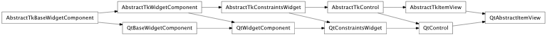

Bases: enaml.components.control.Control
An abstract base class view that contains common logic for the ListView, TableView, and TreeView classes.
The AbstractItemModel instance being displayed by the view.
The selection model for this view. If more than one selection model is declared and exception will be raised.
The ModelIndex that has just been activated by a user interaction, usually a double-click or an Enter keypress.
The ModelIndex that has just been clicked.
The ModelIndex that has just been double-clicked.
Overridden parent class trait.
alias of __NoInterface__

Bases: enaml.backends.qt.qt_control.QtControl, enaml.components.abstract_item_view.AbstractTkItemView
An abstract base class for implementing Qt item views.